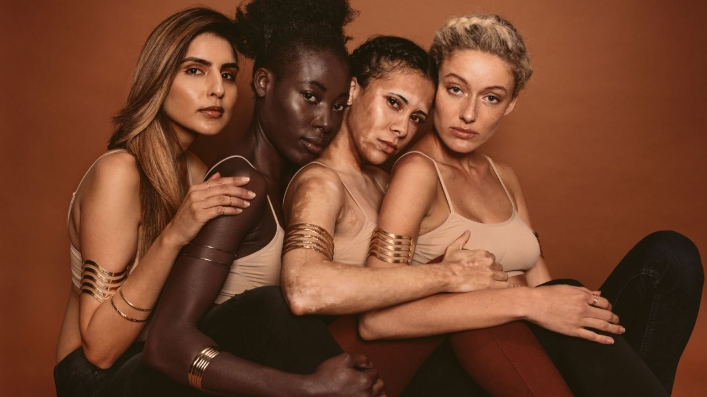
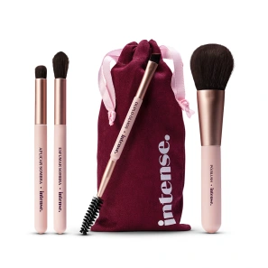
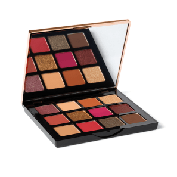
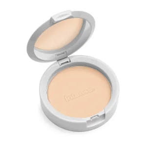
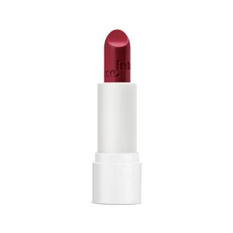
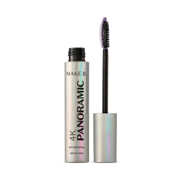
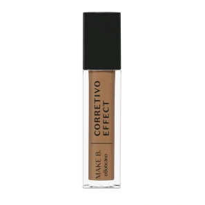
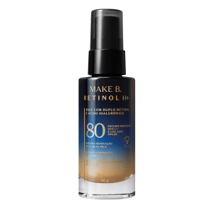

O que é automaquiagem?
A automaquiagem é a prática de se maquiar por conta própria, sem a ajuda de um profissional.
Essa é utilizada por pessoas que desejam realçar a sua beleza e expressar sua personalidade através da maquiagem.
Com essa técnica é possível destacar pontos fortes do rosto e criar diferentes looks para diferentes ocasiões. Ao entender os princípios da automaquiagem,
você vai aprender como usar produtos que destaquem a sua beleza e ainda escolher o acabamento que melhor combina com o seu tipo de pele.
Entendendo o seu tipo de pele e tom:

Antes de começar a se maquiar, é importante entender o seu tipo de pele e tom para escolher os produtos adequados.
Existem quatro tipos de pele: equilibrada, seca, oleosa e mista. Para entender melhor quais são as características de cada uma delas e identificar qual é a sua.
Entender qual é o seu tipo de pele te ajuda a fazer a escolha certa na hora de adquirir os produtos para fazer a sua maquiagem,peles secas, por exemplo, devem optar por usar produtos com fórmulas hidratantes para evitar o ressecamento,
já a pele oleosa deve usar maquiagem com ativos que ajudem a controlar a oleosidade excessiva e manter a pele sequinha por mais tempo.
Já para escolher o tom da base e do corretivo, é importante saber qual é o tom e o subtom da sua pele.
Ao escolher sua make pessoalmente você pode testar o produto na sua pele.
Produtos essenciais para quem quer começar a se maquiar:

Pincéis

Sombras

Pó facial

Batom

Mácara de Cílios

Corretivo

Base
Passo a passo de como fazer a automaquiagem:
Agora que você já sabe quais produtos usar para começar a se maquiar,
veja o passo a passo para uma maquiagem básica para usar no dia a dia e começar a praticar as técnicas de automaquiagem.
Preparando a pele para a maquiagem:
Antes de começar a maquiagem, é importante preparar a pele para receber os produtos. Para isso, é necessário limpar a pele,
tonificar e hidratar. Essa rotina ajuda a manter a pele saudável e a maquiagem com melhor acabamento.
Faça a maquiagem do rosto:
Com a pele limpa e hidratada, use um pince lpara aplicar a base em todo o rosto. Em seguida,
utilize o corretivo para uniformizar o tom da pele em áreas específicas.
Adicione um toque de blush na região das bochechas para um aspecto saudável e finalize com pó compacto para matificar e controlar a oleosidade.
Maquiagem dos olhos:
Agora com a paleta de maquiagem, escolha uma sombra da cor que preferir e aplique nos olhos com a ajuda de um pincel de esfumar.
Com a mão leve, faça movimentos circulares na pálpebra e côncavo para ter um acabamento mais suave. Em seguida, aplique máscara de cílios para dar volume e definição ao olhar.
Aplique o batom:
Feito isso é só finalizar a maquiagem com batom de sua preferência. você pode escolher diversos tipos de textura, cores e acabamentos.
Hoje em dia, você encontra batons líquidos e stick, escolha o que for melhor para você.
Esperamos que depois de nossas dicas, consiga praticar a automaquigem.